IA-SVA based feature selection improves the performance of clustering algorithms [2]
Donghyung Lee
2018-08-03
- Load packages
- Load the islet scRNA-Seq data
- Filter out low-expressed genes
- Calculate the number of detected genes
- Run tSNE to cluster islet cells.
- Run CellView to cluster islet cells
- Run surrogate variable analysis (SVA).
- Run IA-SVA
- Correlation between SVs
- clustering analyses
- Find marker genes for SV1.
- Find marker genes for SV3.
- Run tSNE post IA-SVA, i.e., run tSNE on marker genes obtained from IA-SVA.
- Session information
Last updated: 2018-08-03
workflowr checks: (Click a bullet for more information)-
✔ R Markdown file: up-to-date
Great! Since the R Markdown file has been committed to the Git repository, you know the exact version of the code that produced these results.
-
✔ Environment: empty
Great job! The global environment was empty. Objects defined in the global environment can affect the analysis in your R Markdown file in unknown ways. For reproduciblity it’s best to always run the code in an empty environment.
-
✔ Seed:
set.seed(20180731)The command
set.seed(20180731)was run prior to running the code in the R Markdown file. Setting a seed ensures that any results that rely on randomness, e.g. subsampling or permutations, are reproducible. -
✔ Session information: recorded
Great job! Recording the operating system, R version, and package versions is critical for reproducibility.
-
Great! You are using Git for version control. Tracking code development and connecting the code version to the results is critical for reproducibility. The version displayed above was the version of the Git repository at the time these results were generated.✔ Repository version: 2689835
Note that you need to be careful to ensure that all relevant files for the analysis have been committed to Git prior to generating the results (you can usewflow_publishorwflow_git_commit). workflowr only checks the R Markdown file, but you know if there are other scripts or data files that it depends on. Below is the status of the Git repository when the results were generated:
Note that any generated files, e.g. HTML, png, CSS, etc., are not included in this status report because it is ok for generated content to have uncommitted changes.Ignored files: Ignored: .DS_Store Ignored: .Rhistory Ignored: .Rproj.user/ Ignored: data/.DS_Store Ignored: inst/.DS_Store Ignored: inst/doc/.DS_Store Ignored: vignettes/.DS_Store Untracked files: Untracked: Clustering_analyses_figure4_islets_sv1_3.pdf Untracked: docs/figure/hidden_heterogeneity_glioblastoma.Rmd/ Untracked: docs/figure/tSNE_post_IA-SVA_3celltypes.Rmd/ Untracked: output/CC_genes.long.txt Untracked: output/CC_genes.short.txt Untracked: output/Clustering_analyses_figure3_sv1.pdf Untracked: output/Lawlor_Islets_3Cells_CellView_Seurat_FigS.pdf Untracked: output/Lawlor_Islets_3Cells_IASVA_SV1SV3_rsqcutoff0.3_pheatmap_iasvaV0.95_Figure4_C.pdf Untracked: output/Lawlor_Islets_3Cells_IASVA_SV4_rsqcutoff0.3_pheatmap_iasvaV0.95.pdf Untracked: output/Lawlor_Islets_3Cells_IASVA_pairs4SVs_iasvaV0.95_black_FigS6.pdf Untracked: output/Lawlor_Islets_3Cells_IASVA_pairs4SVs_iasvaV0.95_color_FigS6.pdf Untracked: output/Lawlor_Islets_3Cells_SV1_SV3_Cell_Type_Genes_rsqcutoff0.3.txt Untracked: output/Lawlor_Islets_3Cells_SV4_Genes_rsqcutoff0.3.txt Untracked: output/Lawlor_Islets_3Cells_tSNE_IA-SVA_Fig4AB.pdf Untracked: output/Patel_Glioblastoma_MGH30_CellCycle_Figure3ABCD.pdf Untracked: output/Patel_Glioblastoma_MGH30_Cellcycle_SV1_Genes_rsqcutoff0.3.txt Untracked: output/Patel_Glioblastoma_MGH30_Cellcycle_SV1_Genes_rsqcutoff0.4.txt Untracked: output/Patel_Glioblastoma_MGH30_iasva_SV1_genes_rsqcutoff0.3_pheatmap_iasvaV0.95_Figure3F.pdf
Expand here to see past versions:
Here, we used single cell RNA sequencing (scRNA-Seq) data with strong confounding variables, which is also obtained from human pancreatic islet samples (Xin et. al., 2016). This dataset is included in an R data package (“iasvaExamples”) containing data examples for IA-SVA (https://github.com/dleelab/iasvaExamples). To install the ‘iasvaExamples’ package, follow the instructions provided in the GitHub page.
Load packages
rm(list=ls())
library(sva)Loading required package: mgcvLoading required package: nlmeThis is mgcv 1.8-23. For overview type 'help("mgcv-package")'.Loading required package: genefilterLoading required package: BiocParallellibrary(Seurat)Loading required package: ggplot2Loading required package: cowplot
Attaching package: 'cowplot'The following object is masked from 'package:ggplot2':
ggsaveLoading required package: Matrixlibrary(iasva)
library(iasvaExamples)
library(dbscan)
library(irlba)
library(Rtsne)
library(pheatmap)
library(corrplot)corrplot 0.84 loadedlibrary(DescTools) #pcc i.e., Pearson's contingency coefficient
Attaching package: 'DescTools'The following object is masked from 'package:genefilter':
AUClibrary(RColorBrewer)
library(cluster)
library(SummarizedExperiment)Loading required package: GenomicRangesLoading required package: stats4Loading required package: BiocGenericsLoading required package: parallel
Attaching package: 'BiocGenerics'The following objects are masked from 'package:parallel':
clusterApply, clusterApplyLB, clusterCall, clusterEvalQ,
clusterExport, clusterMap, parApply, parCapply, parLapply,
parLapplyLB, parRapply, parSapply, parSapplyLBThe following objects are masked from 'package:Matrix':
colMeans, colSums, rowMeans, rowSums, whichThe following objects are masked from 'package:stats':
IQR, mad, sd, var, xtabsThe following objects are masked from 'package:base':
anyDuplicated, append, as.data.frame, basename, cbind,
colMeans, colnames, colSums, dirname, do.call, duplicated,
eval, evalq, Filter, Find, get, grep, grepl, intersect,
is.unsorted, lapply, lengths, Map, mapply, match, mget, order,
paste, pmax, pmax.int, pmin, pmin.int, Position, rank, rbind,
Reduce, rowMeans, rownames, rowSums, sapply, setdiff, sort,
table, tapply, union, unique, unsplit, which, which.max,
which.minLoading required package: S4Vectors
Attaching package: 'S4Vectors'The following object is masked from 'package:Matrix':
expandThe following object is masked from 'package:base':
expand.gridLoading required package: IRanges
Attaching package: 'IRanges'The following object is masked from 'package:nlme':
collapseLoading required package: GenomeInfoDbLoading required package: BiobaseWelcome to Bioconductor
Vignettes contain introductory material; view with
'browseVignettes()'. To cite Bioconductor, see
'citation("Biobase")', and for packages 'citation("pkgname")'.Loading required package: DelayedArrayLoading required package: matrixStats
Attaching package: 'matrixStats'The following objects are masked from 'package:Biobase':
anyMissing, rowMediansThe following objects are masked from 'package:genefilter':
rowSds, rowVars
Attaching package: 'DelayedArray'The following objects are masked from 'package:matrixStats':
colMaxs, colMins, colRanges, rowMaxs, rowMins, rowRangesThe following objects are masked from 'package:base':
aperm, applycolor.vec <- brewer.pal(8, "Set1")
tol21rainbow= c("#771155", "#AA4488", "#CC99BB", "#114477", "#4477AA",
"#77AADD", "#117777", "#44AAAA", "#77CCCC", "#117744",
"#44AA77", "#88CCAA", "#777711", "#AAAA44", "#DDDD77",
"#774411", "#AA7744", "#DDAA77", "#771122", "#AA4455",
"#DD7788")
# Normalization.
normalize <- function(counts)
{
normfactor <- colSums(counts)
return(t(t(counts)/normfactor)*median(normfactor))
}Load the islet scRNA-Seq data
data("Xin_Islet_scRNAseq_Read_Counts")
data("Xin_Islet_scRNAseq_Annotations")
ls()[1] "color.vec" "normalize"
[3] "tol21rainbow" "Xin_Islet_scRNAseq_Annotations"
[5] "Xin_Islet_scRNAseq_Read_Counts"counts <- Xin_Islet_scRNAseq_Read_Counts
anns <- Xin_Islet_scRNAseq_Annotations
dim(anns)[1] 1600 9dim(counts)[1] 26542 1600Lib_Size <- colSums(counts)
plot(sort(Lib_Size))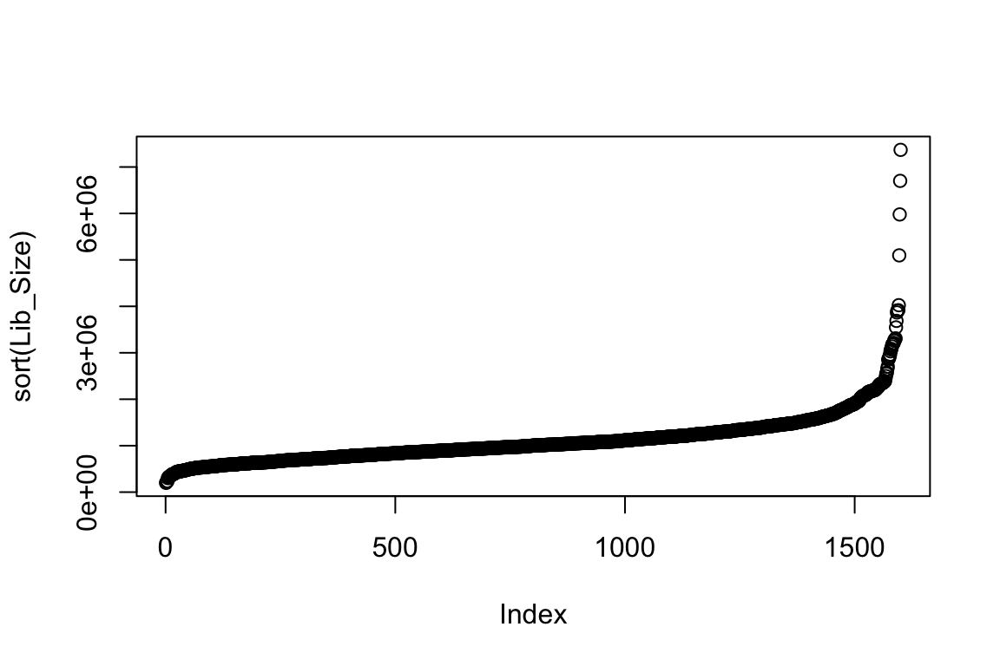
hist(Lib_Size)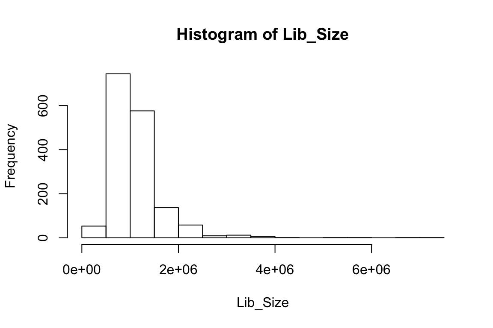
summary(Lib_Size) Min. 1st Qu. Median Mean 3rd Qu. Max.
199678 773969 1002044 1104395 1288619 7369192 The annotations describing the islet samples and experimental settings are stored in “anns” and the read counts information is stored in “counts”.
Filter out low-expressed genes
dim(counts)[1] 26542 1600
dim(anns)[1] 1600 9
anns <- droplevels(anns)
prop.zeros <- sum(counts==0)/length(counts)
prop.zeros[1] 0.7040829
filter = apply(counts, 1, function(x) length(x[x>5])>=3)
counts = counts[filter,]
dim(counts)[1] 19169 1600
prop.zeros <- sum(counts==0)/length(counts)
prop.zeros[1] 0.5913386
summary(anns) X Age Cell_Type Condition SRR3541303: 1 Min. :23.00 alpha:946 non-diabetic:651
SRR3541304: 1 1st Qu.:37.00 beta :503 T2D :949
SRR3541305: 1 Median :42.00 delta: 58
SRR3541306: 1 Mean :43.89 PP : 93
SRR3541307: 1 3rd Qu.:55.00
SRR3541308: 1 Max. :68.00
(Other) :1594
Donor_ID Ethnicity Gender Num_Expressed_Genes T2D 4 :306 AA:369 female:658 Min. :1745
T2D 6 :224 AI: 45 male :942 1st Qu.:4412
T2D 5 :176 C :593 Median :5158
Non T2D 12:144 H :593 Mean :5185
T2D 1 : 91 3rd Qu.:5902
T2D 2 : 83 Max. :9731
(Other) :576
Mitochondrial_Fraction Min. : 0.2812
1st Qu.: 4.1449
Median : 6.3422
Mean : 7.4164
3rd Qu.:10.1241
Max. :22.8479
Patient_ID <- anns$Donor_ID
Gender <- anns$Gender
Age <- anns$Age
Cell_Type <- anns$Cell_Type
Phenotype <- anns$Condition
Ethnicity <- anns$Ethnicity
Mito_Frac <- anns$Mitochondrial_Fraction
table(Cell_Type, Patient_ID) Patient_IDCell_Type Non T2D 1 Non T2D 10 Non T2D 11 Non T2D 12 Non T2D 2 Non T2D 3 alpha 56 20 49 92 4 29 beta 13 26 12 50 13 10 delta 5 2 1 2 2 3 PP 3 1 1 0 5 2 Patient_ID Cell_Type Non T2D 4 Non T2D 5 Non T2D 6 Non T2D 7 Non T2D 8 Non T2D 9 alpha 15 26 38 8 14 26 beta 11 24 7 17 17 7 delta 0 5 4 0 3 1 PP 5 2 1 4 11 4 Patient_ID Cell_Type T2D 1 T2D 2 T2D 3 T2D 4 T2D 5 T2D 6 alpha 39 50 33 152 161 134 beta 12 18 29 144 12 81 delta 4 5 4 8 1 8 PP 36 10 3 2 2 1
ContCoef(table(Cell_Type, Patient_ID))[1] 0.4832611
table(Cell_Type, Gender) GenderCell_Type female male alpha 358 588 beta 244 259 delta 24 34 PP 32 61
ContCoef(table(Cell_Type, Gender))[1] 0.1033314
table(Cell_Type, Age) AgeCell_Type 23 24 27 29 31 32 37 41 42 43 51 55 56 57 60 68 alpha 85 26 26 8 49 4 50 152 161 20 134 33 107 39 14 38 beta 23 7 24 17 12 13 18 144 12 26 81 29 61 12 17 7 delta 8 1 5 0 1 2 5 8 1 2 8 4 2 4 3 4 PP 5 4 2 4 1 5 10 2 2 1 1 3 5 36 11 1
ContCoef(table(Cell_Type, Age))[1] 0.4782088
table(Cell_Type, Phenotype) PhenotypeCell_Type non-diabetic T2D alpha 377 569 beta 207 296 delta 28 30 PP 39 54
ContCoef(table(Cell_Type, Phenotype))[1] 0.03317408
table(Cell_Type, Ethnicity) EthnicityCell_Type AA AI C H alpha 213 14 384 335 beta 99 17 150 237 delta 16 3 22 17 PP 41 11 37 4
ContCoef(table(Cell_Type, Ethnicity))[1] 0.2517959
ContCoef(table(Patient_ID, Gender))[1] 0.7071068
ContCoef(table(Patient_ID, Age))[1] 0.9682458
ContCoef(table(Patient_ID, Phenotype))[1] 0.7071068
ContCoef(table(Patient_ID, Ethnicity))[1] 0.8660254
ContCoef(table(Gender, Age))[1] 0.6803731
ContCoef(table(Gender, Phenotype))[1] 0.1724809
ContCoef(table(Gender, Ethnicity))[1] 0.4526994
ContCoef(table(Age, Phenotype))[1] 0.7071068
ContCoef(table(Age, Ethnicity))[1] 0.8569589
ContCoef(table(Phenotype, Ethnicity))[1] 0.4785346
raw.counts <- counts
summary(colSums(counts))Min. 1st Qu. Median Mean 3rd Qu. Max. 199628 773880 1001875 1104286 1288589 7369004
counts <- normalize(counts)
summary(colSums(counts))Min. 1st Qu. Median Mean 3rd Qu. Max. 1001875 1001875 1001875 1001875 1001875 1001875
Note that the orignial cell assignments are highly correlated with known factors.
Calculate the number of detected genes
It is well known that the number of detected genes in each cell explains a very large portion of variability in scRNA-Seq data (Hicks et. al. 2015 BioRxiv, McDavid et. al. 2016 Nature Biotechnology). Frequently, the first principal component of log-transformed scRNA-Seq read counts is highly correlated with the number of detected genes (e.g., r > 0.9). Here, we calculate the number of detected genes for islet cells, which will be used as an known factor in the IA-SVA analyses.
Num_Detected_Genes <- colSums(counts>0)
summary(Num_Detected_Genes) Min. 1st Qu. Median Mean 3rd Qu. Max.
3261 6890 7832 7834 8766 12067 barplot(Num_Detected_Genes, xlab="Cell", las=2, ylab = "Number of detected genes")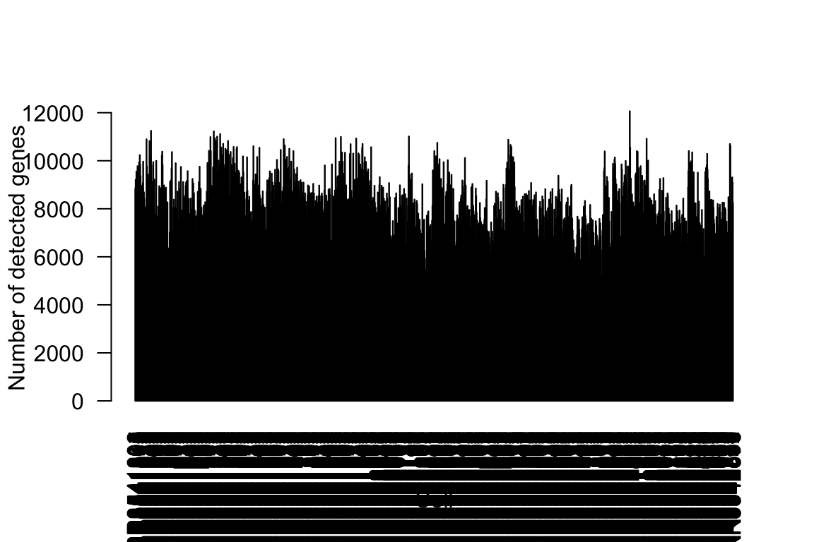
lcounts <- log(counts + 1)
# PCA
pca.res = irlba(lcounts - rowMeans(lcounts), 5)$v
cor(Num_Detected_Genes, pca.res[,1])[1] 0.8906152dim(lcounts)[1] 19169 1600Run tSNE to cluster islet cells.
For comparison purposes,we applied tSNE on read counts of all genes. We used the Rtsne R package with default settings. Genes are color coded wrt their expression of marker genes.
set.seed(34544532)
tsne.res.all <- Rtsne(t(lcounts), dims = 2)
plot(tsne.res.all$Y, main="tSNE", xlab="tSNE Dim1",
ylab="tSNE Dim2",pch=21, col=color.vec[Cell_Type],
bg=color.vec[Cell_Type], oma=c(4,4,6,12))
legend("topright", levels(Cell_Type), border="white", fill=color.vec, bty="n")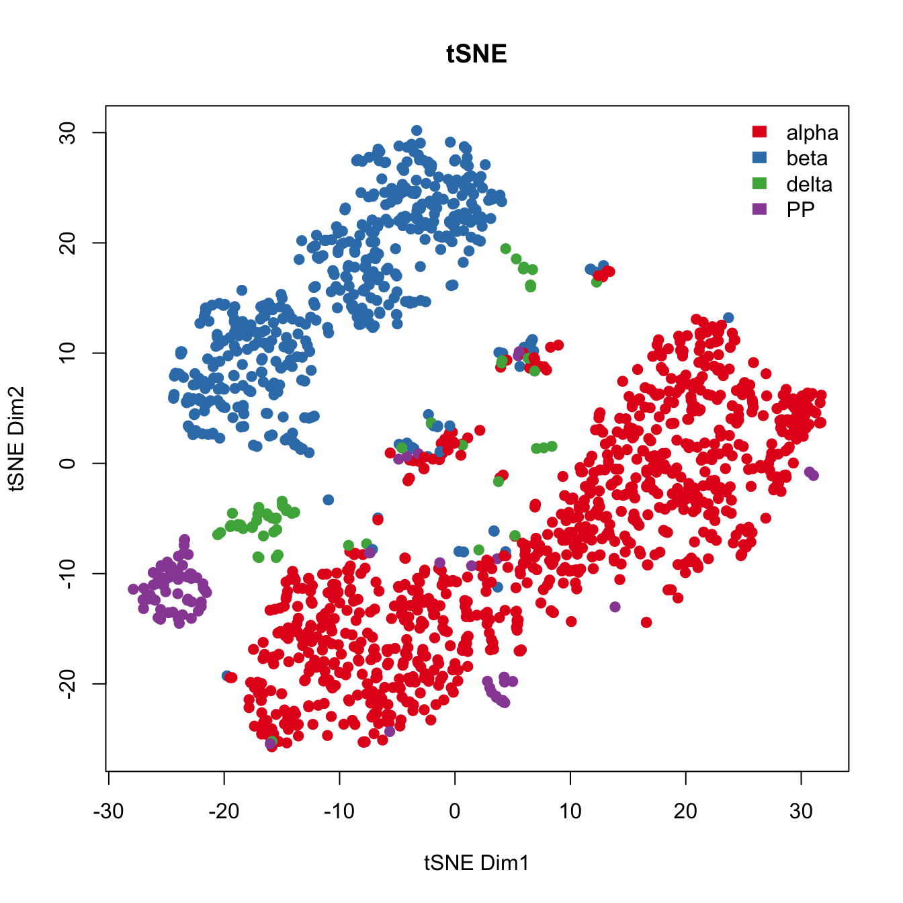
par(mfrow=c(2,2))
plot(tsne.res.all$Y, main="Gender", xlab="Dimension 1",
ylab="Dimension 2", pch=21, col=color.vec[Gender],
bg=color.vec[Gender], oma=c(4,4,6,12))
legend("topleft", levels(Gender), border="white",
fill=color.vec, bty="n")
plot(tsne.res.all$Y, main="Patient ID", xlab="Dimension 1",
ylab="Dimension 2", pch=21, col=tol21rainbow[Patient_ID],
bg=tol21rainbow[Patient_ID], oma=c(4,4,6,12))
legend("topleft", levels(Patient_ID), border="white",
fill=tol21rainbow, bty="n", cex=0.5)
plot(tsne.res.all$Y, main="Ethnicity", xlab="Dimension 1",
ylab="Dimension 2", pch=21, col=color.vec[Ethnicity],
bg=color.vec[Ethnicity], oma=c(4,4,6,12))
legend("topleft", levels(Ethnicity), border="white",
fill=color.vec, bty="n")
plot(tsne.res.all$Y, main="Phenotype", xlab="Dimension 1",
ylab="Dimension 2", pch=21, col=color.vec[Phenotype],
bg=color.vec[Phenotype], oma=c(4,4,6,12))
legend("topleft", levels(Phenotype), border="white", fill=color.vec, bty="n")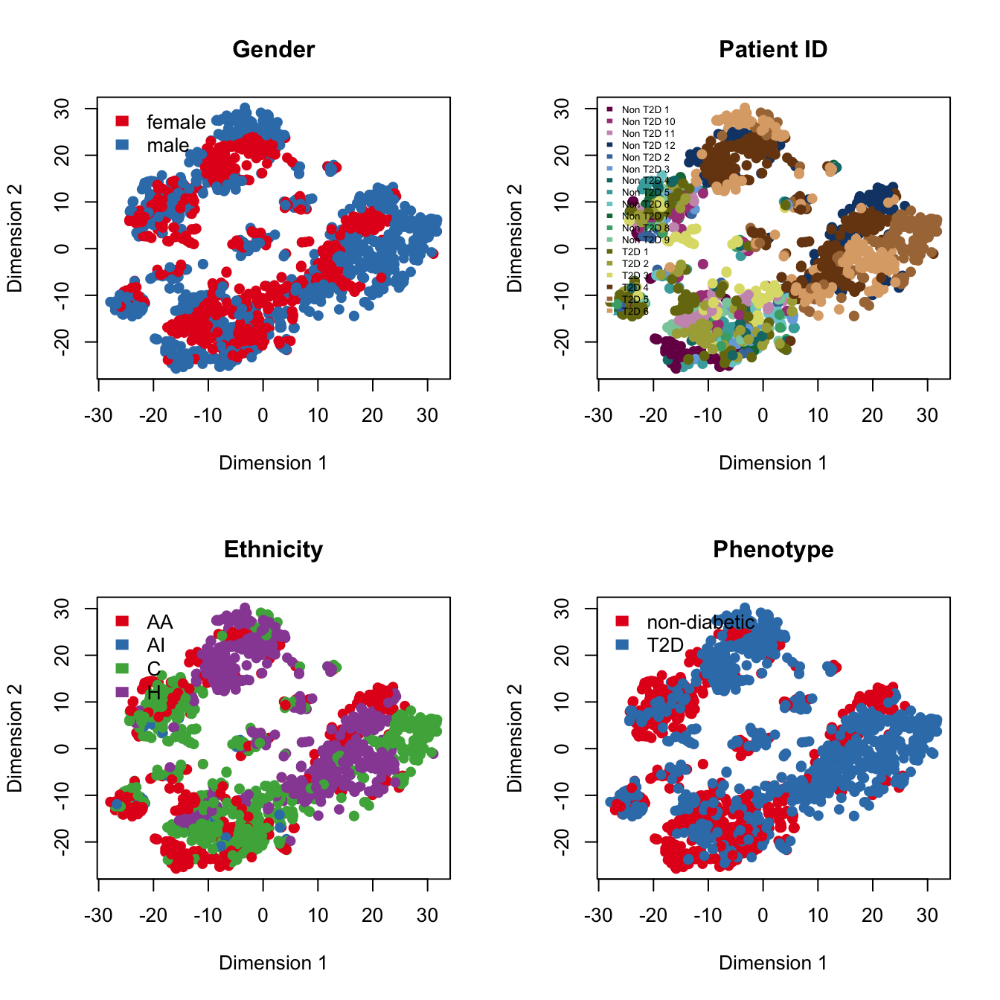
par(mfrow=c(1,1))Known factors deteriorate the performance of t-SNE.
Run CellView to cluster islet cells
# specify gene number to select for
gene_num <- 1000
# calcuclate dispersion
row.var <- apply(lcounts,1,sd)**2
row.mean <- apply(lcounts,1,mean)
dispersion <- row.var/row.mean
# generate sequence of bins
bins <- seq(from = min(row.mean), to = max(row.mean), length.out = 20)
# sort mean expression data into the bins
bin.exp <- row.mean
# sort the values
bin.sort <- sort(bin.exp, decreasing = FALSE)
# vector of bin assignment
cuts <- cut(x = bin.exp, breaks = bins, labels = FALSE)
# find which are NA and change to zero
na.ids <- which(is.na(cuts) == TRUE)
cuts[na.ids] <- 0
# create an empty vector for overdispersion
overdispersion <- NULL
# for each gene and bin index, calculate median, mad, and then normalized dispersion
# first loop through length of bins found
for (k in 1:length(names(table(cuts)))) {
# find index of bins
bin.id <- which(cuts == names(table(cuts))[k])
# median of all genes in the bin
median.bin <- median(dispersion[bin.id], na.rm = TRUE)
# calculate mad (median absolute deviation)
mad.bin <- mad(dispersion[bin.id])
# calculate norm dispersion for each gene
for (m in 1:length(bin.id)) {
norm.dispersion <- abs(dispersion[bin.id[m]] - median.bin)/mad.bin
overdispersion <- c(overdispersion, norm.dispersion)
}
}
# remove nans
overdis.na <- which(is.na(overdispersion) == TRUE)
if (length(overdis.na) > 0) {
overdis.filt <- overdispersion[-overdis.na]
} else {
overdis.filt <- overdispersion
}
# plot mean expression vs overdisperssion
ids <- which(names(overdis.filt) %in% names(row.mean))
plot(row.mean[ids], overdis.filt)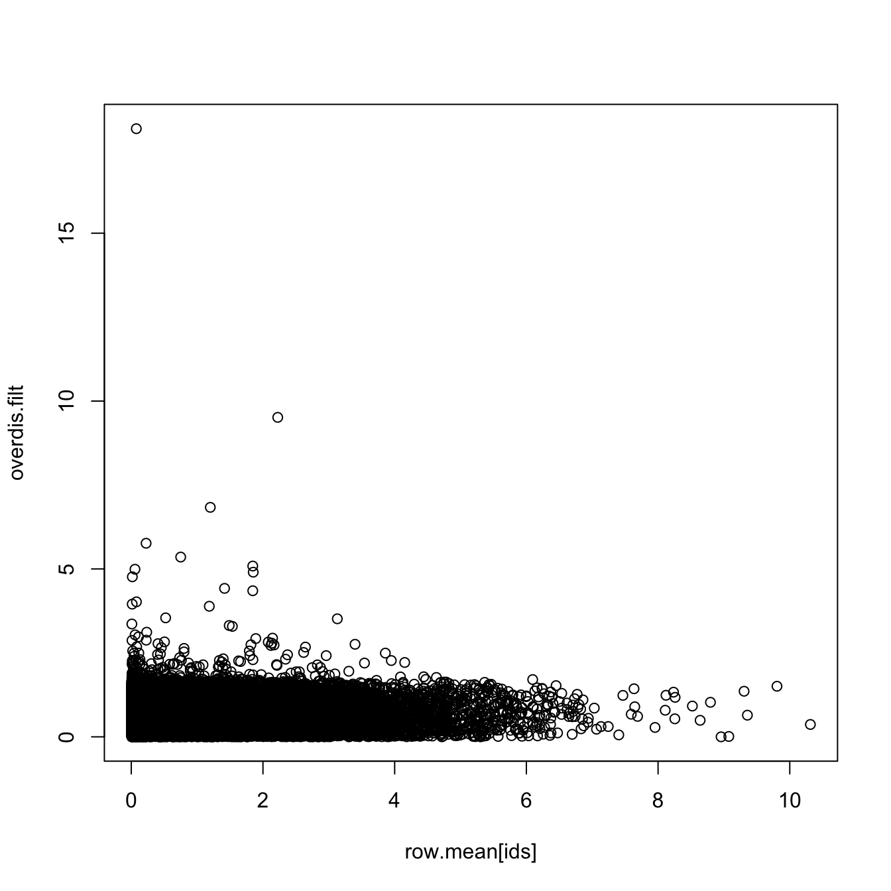
# Do t-sne using top over-dispersed genes (apply mean expression filter too)
rank.ov <- order(overdis.filt, decreasing = TRUE)
ov.genes <- names(overdis.filt[rank.ov[1:gene_num]])
log.sel <- lcounts[ov.genes,]
all1 <- t(log.sel)
# Remove groups that are all zeros
df <- all1[,apply(all1, 2, var, na.rm=TRUE) != 0]
set.seed(45344)
rtsne_out <- Rtsne(as.matrix(df), dims = 3)
# Set rownames of matrix to tsne matrix
rownames(rtsne_out$Y) <- rownames(df)
plot(rtsne_out$Y[,c(1,2)], main="CellView", xlab="Dimension 1",
ylab="Dimension 2",pch=21, col=color.vec[Cell_Type],
bg=color.vec[Cell_Type], oma=c(4,4,6,12))
legend("topright", levels(Cell_Type), border="white", fill=color.vec, bty="n")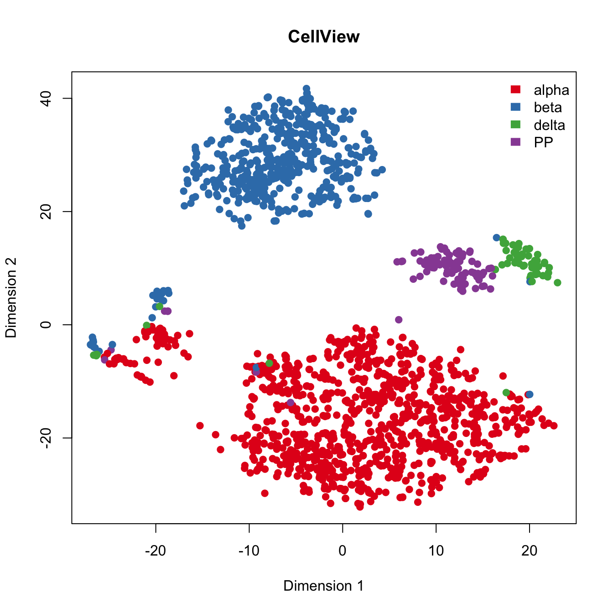 ## Run Seurat to cluster islet cells
set.seed(12344)
seurat.obj <- CreateSeuratObject(raw.data=counts,
min.cells=3, min.genes=200, project="Seurat_Comp")
names(Patient_ID) <- rownames(seurat.obj@meta.data)
seurat.obj <- AddMetaData(object = seurat.obj,
metadata = Patient_ID, col.name = "patient.id")
# Normalizing the data
seurat.obj <- NormalizeData(object = seurat.obj, normalization.method = "LogNormalize",
scale.factor = 10000)
# Detection of variable genes across the single cells
seurat.obj <- FindVariableGenes(object = seurat.obj, mean.function = ExpMean, dispersion.function = LogVMR,
x.low.cutoff = 0.0125, x.high.cutoff = 3, y.cutoff = 0.5)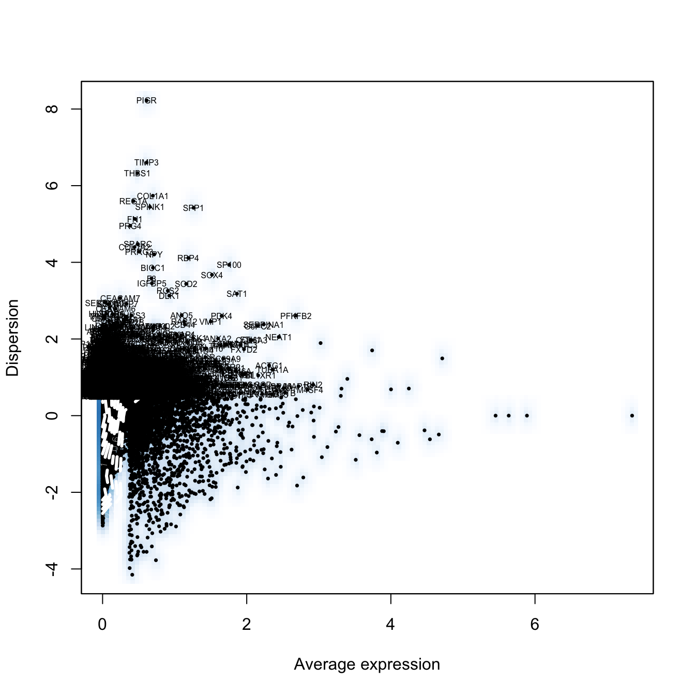
length(x = seurat.obj@var.genes) #6639[1] 6639# Scaling the data and removing unwanted sources of variation
seurat.obj <- ScaleData(object = seurat.obj, vars.to.regress = c("nGene", "patient.id"))Regressing out: nGene, patient.id
Time Elapsed: 31.3347609043121 secsScaling data matrix# Perform linear dimensional reduction
seurat.obj <- RunPCA(object = seurat.obj, pc.genes = seurat.obj@var.genes, do.print = TRUE, pcs.print = 1:5,
genes.print = 5)[1] "PC1"
[1] "TM4SF4" "GC" "GLS" "FAP" "PAPPA2"
[1] ""
[1] "HADH" "TIMP2" "SYNE2" "ADCYAP1" "PCSK1"
[1] ""
[1] ""
[1] "PC2"
[1] "ADCYAP1" "HADH" "ERO1LB" "PFKFB2" "NPTX2"
[1] ""
[1] "IFITM3" "SPARC" "LGALS1" "COL1A2" "COL1A1"
[1] ""
[1] ""
[1] "PC3"
[1] "COL1A2" "COL3A1" "BGN" "SPARC" "COL15A1"
[1] ""
[1] "CFTR" "MMP7" "LCN2" "KRT19" "PDZK1IP1"
[1] ""
[1] ""
[1] "PC4"
[1] "SLITRK6" "CALCRL" "THSD7A" "CALB1" "ETV1"
[1] ""
[1] "PFKFB2" "ANXA2" "ROBO2" "RIN2" "ENO1"
[1] ""
[1] ""
[1] "PC5"
[1] "ETV1" "CALB1" "SLITRK6" "SPOCK1" "THSD7A"
[1] ""
[1] "PODXL" "CD93" "FLT1" "PLVAP" "ESAM"
[1] ""
[1] ""# Determine statistically significant principal components
if(FALSE){
seurat.obj <- JackStraw(object = seurat.obj, num.replicate = 100, do.print = FALSE)
JackStrawPlot(object = seurat.obj, PCs = 1:20)
PCElbowPlot(object = seurat.obj)
# Cluster the cells
seurat.obj <- FindClusters(object = seurat.obj, reduction.type = "pca", dims.use = 1:10,
resolution = 0.6, print.output = 0, save.SNN = TRUE)
PrintFindClustersParams(object = seurat.obj)
}
set.seed(12344454)
seurat.obj <- RunTSNE(object = seurat.obj, dims.use = 1:10, do.fast = TRUE)
TSNEPlot(object = seurat.obj)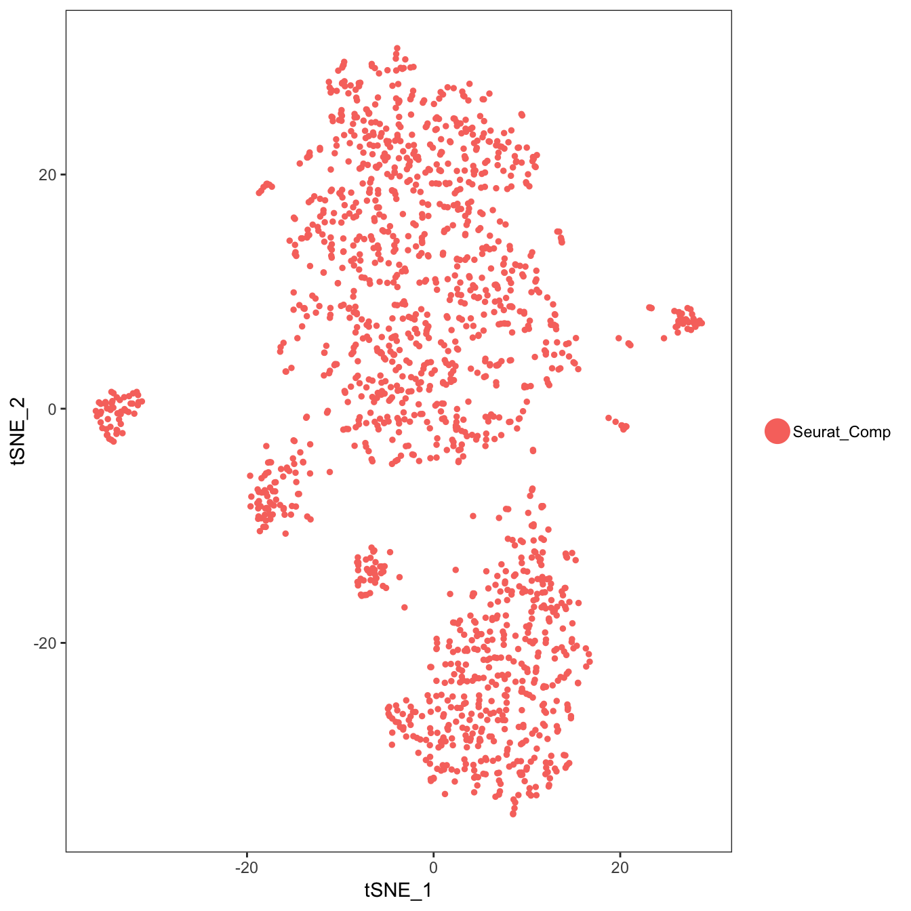
# with true cell types
plot(seurat.obj@dr$tsne@cell.embeddings[,c(1,2)],
main="Spectral tSNE (Seurat)", xlab="Dimension 1",
ylab="Dimension 2",pch=21, col=color.vec[Cell_Type],
bg=color.vec[Cell_Type], oma=c(4,4,6,12))
legend("topright", levels(Cell_Type), border="white", fill=color.vec, bty="n")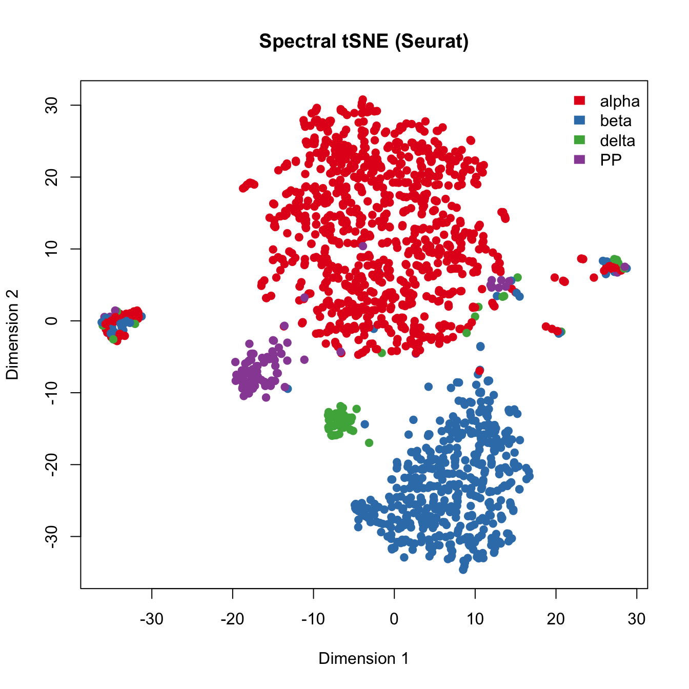 ## Run PCA to cluster islet cells. Here, we applied PCA on read counts of all genes. Genes are color coded with their expression of marker genes.
pairs(pca.res[,1:4], main="PCA", pch=21, col=color.vec[Cell_Type],
bg=color.vec[Cell_Type], cex=0.8, oma=c(4,4,6,12))
legend("right", levels(Cell_Type), border="white", fill=color.vec, bty="n")
Run surrogate variable analysis (SVA).
Here, for comparison purposes we conduct SVA on our example data while adjusting for Patient_ID and Geo_Lib_Size and obtained 4 hidden factors.
set.seed(34544455)
mod1 <- model.matrix(~Patient_ID+Num_Detected_Genes)
mod0 <- cbind(mod1[,1])
sva.res = svaseq(counts,mod1,mod0, n.sv=4)$svNumber of significant surrogate variables is: 4
Iteration (out of 5 ):1 2 3 4 5 pairs(sva.res[,1:4], main="SVA", pch=21, col=color.vec[Cell_Type],
bg=color.vec[Cell_Type], cex=0.8, oma=c(4,4,6,12))
legend("right", levels(Cell_Type), border="white", fill=color.vec, bty="n")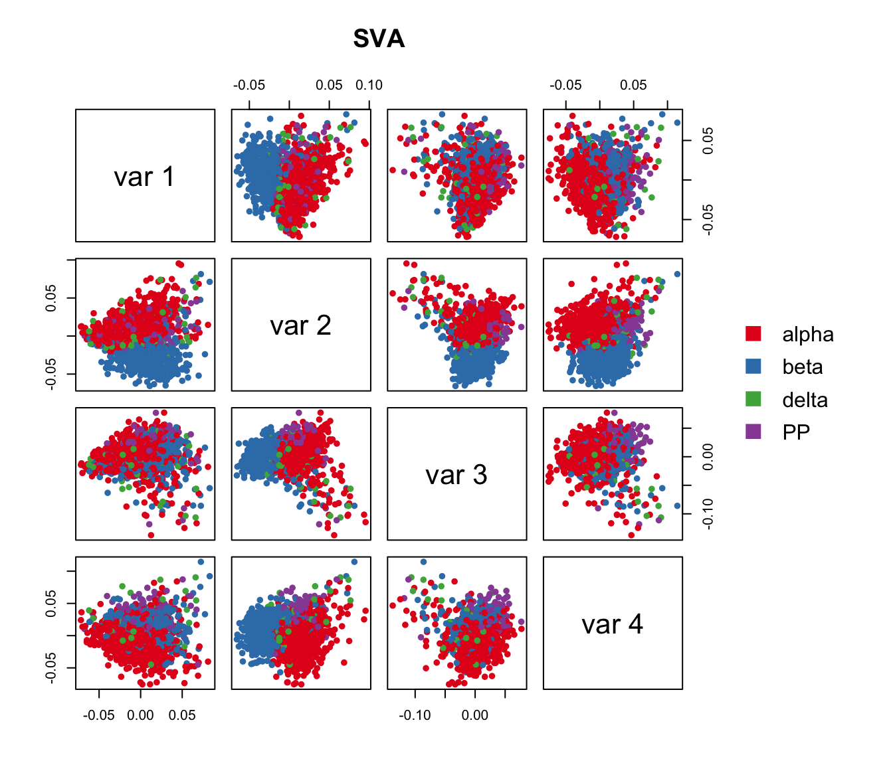
Run IA-SVA
Here, we run IA-SVA using Patient_ID and Geo_Lib_Size as known factors and identify 4 hidden factors.
set.seed(345466666)
mod <- model.matrix(~Patient_ID+Num_Detected_Genes)
summ_exp <- SummarizedExperiment(assays = counts)
iasva.res<- iasva(summ_exp, mod[,-1],verbose=FALSE, permute=FALSE, num.sv=4)IA-SVA running...
SV 1 Detected!
SV 2 Detected!
SV 3 Detected!
SV 4 Detected!
# of significant surrogate variables: 4iasva.sv <- iasva.res$sv
## no color
pairs(iasva.sv[,1:4], pch=21, col="black", bg="black", cex=0.8)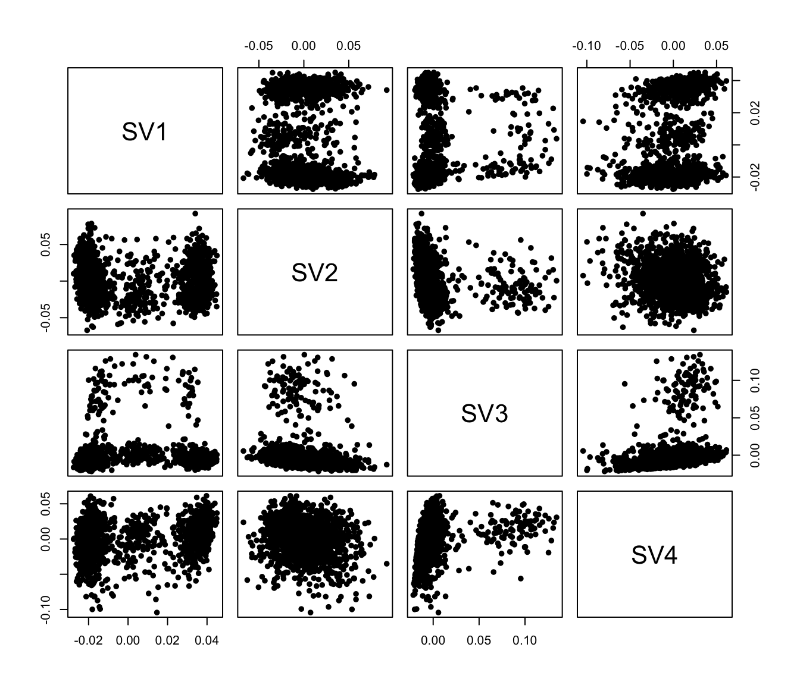
## with color-coding
pairs(iasva.sv[,1:4], main="IA-SVA", pch=21, col=color.vec[Cell_Type],
bg=color.vec[Cell_Type], cex=0.8, oma=c(4,4,6,12))
legend("right", levels(Cell_Type), border="white", fill=color.vec, bty="n")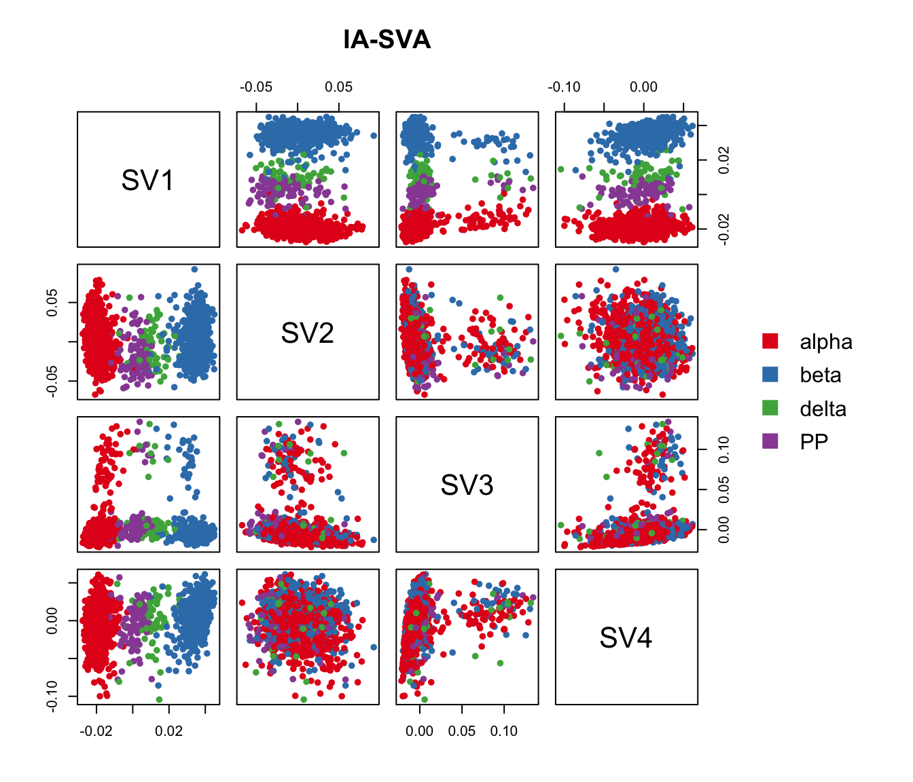
Correlation between SVs
cor(iasva.sv) SV1 SV2 SV3 SV4
SV1 1.00000000 0.03808617 0.06200799 0.2507764
SV2 0.03808617 1.00000000 -0.15724552 -0.1830763
SV3 0.06200799 -0.15724552 1.00000000 0.2474547
SV4 0.25077642 -0.18307630 0.24745468 1.0000000corrplot(cor(iasva.sv))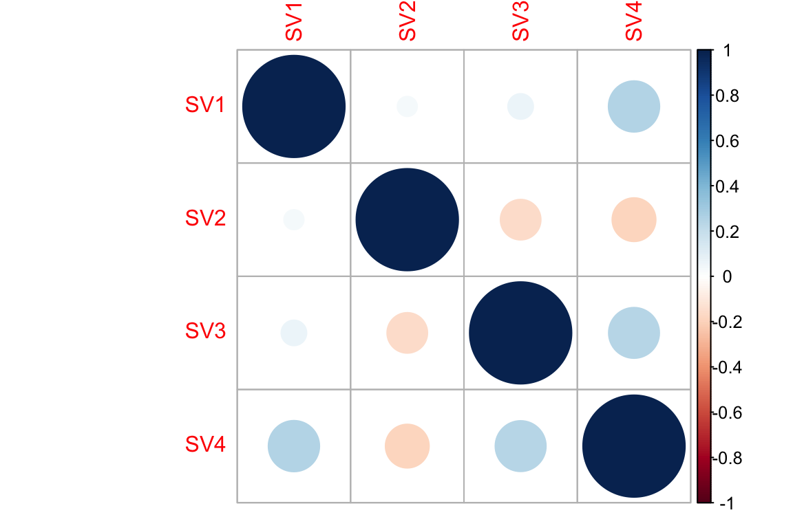
clustering analyses
Here, try different R2 cutoffs
no.clusters <- 4
C.scores <- matrix(0,0,0)
Number.of.genes <- matrix(0,0,0)
for (i in seq(0.1,0.9,0.05)){
marker.counts <- find_markers(summ_exp, as.matrix(iasva.sv[,2]), rsq.cutoff = i)
no.genes <- dim(marker.counts)[1]
if(no.genes == 0){
break
}
else{
my.dist <- dist(t(log(marker.counts+1)))
my.clustering <- hclust(my.dist, method = "ward.D2")
my.silhoutte <-silhouette(cutree(my.clustering,no.clusters),my.dist)
C1 <- mean(my.silhoutte[my.silhoutte[,1]==1,3])
C2 <- mean(my.silhoutte[my.silhoutte[,1]==2,3])
average.C <- (C1+C2)/2
C.scores <- c(C.scores, average.C)
Number.of.genes <- c(Number.of.genes,no.genes)
}
}# of markers (): 2204total # of unique markers: 2204# of markers (): 1326total # of unique markers: 1326# of markers (): 839total # of unique markers: 839# of markers (): 528total # of unique markers: 528# of markers (): 329total # of unique markers: 329# of markers (): 190total # of unique markers: 190# of markers (): 111total # of unique markers: 111# of markers (): 57total # of unique markers: 57# of markers (): 30total # of unique markers: 30# of markers (): 15total # of unique markers: 15# of markers (): 2total # of unique markers: 2# of markers (): 0total # of unique markers: 0output.matrix <- rbind(C.scores, Number.of.genes)
pdf("output/Clustering_analyses_figure4_Xin.pdf")
par(mar=c(5,5,5,5))
end.point <- (length(C.scores)-1)*0.05+0.1
plot(Number.of.genes, xlab = "R^2", ylab = "Number genes selected", xaxt="n", main = "Number of selected genes vs. Cluster quality", pch = 18, col ="blue",type="b", lty=2, cex=2)
Axis(1,at=seq(1,length(Number.of.genes)), side = 1, labels=seq(0.1,end.point,0.05),las = 2)
par(new=T)
plot(C.scores, xlab='', ylab='', axes=F, pch = 18 , col ="red",type="b", lty=2, cex=2)
Axis(side=4)
mtext(side = 4, line = 2, 'Average Silhoutte Score', col = "red")
par(new=F)
dev.off()quartz_off_screen
2 Find marker genes for SV1.
# try different R2 thresholds
pdf("output/Clustering_analyses_figure4_Xin_sv1.pdf")
r2.results <- study_R2(summ_exp, iasva.sv,selected.svs=1, no.clusters=2)# of markers (): 369total # of unique markers: 369# of markers (): 198total # of unique markers: 198# of markers (): 123total # of unique markers: 123# of markers (): 87total # of unique markers: 87# of markers (): 57total # of unique markers: 57# of markers (): 44total # of unique markers: 44# of markers (): 37total # of unique markers: 37# of markers (): 26total # of unique markers: 26# of markers (): 20total # of unique markers: 20# of markers (): 14total # of unique markers: 14# of markers (): 12total # of unique markers: 12# of markers (): 8total # of unique markers: 8# of markers (): 7total # of unique markers: 7# of markers (): 5total # of unique markers: 5# of markers (): 4total # of unique markers: 4# of markers (): 1total # of unique markers: 1# of markers (): 0total # of unique markers: 0dev.off()quartz_off_screen
2 marker.counts <- find_markers(summ_exp, as.matrix(iasva.sv[,c(1)]), rsq.cutoff = 0.3)# of markers (): 57total # of unique markers: 57nrow(marker.counts)[1] 57marker.counts.long <- find_markers(summ_exp, as.matrix(iasva.sv[,c(1)]), rsq.cutoff = 0.2)# of markers (): 123total # of unique markers: 123nrow(marker.counts.long) [1] 123anno.col <- data.frame(Cell_Type=Cell_Type)
rownames(anno.col) <- colnames(marker.counts)
head(anno.col) Cell_Type
SRR3541303 beta
SRR3541304 beta
SRR3541305 beta
SRR3541306 beta
SRR3541307 beta
SRR3541308 betacell.type.col <- color.vec[1:4]
names(cell.type.col) <- c("alpha","beta","delta","PP")
anno.colors <- list(Cell_Type=cell.type.col)
pheatmap(log(marker.counts+1), show_colnames =FALSE, show_rownames = TRUE,
clustering_method = "ward.D2",cutree_cols = 4,
annotation_col = anno.col, annotation_colors=anno.colors)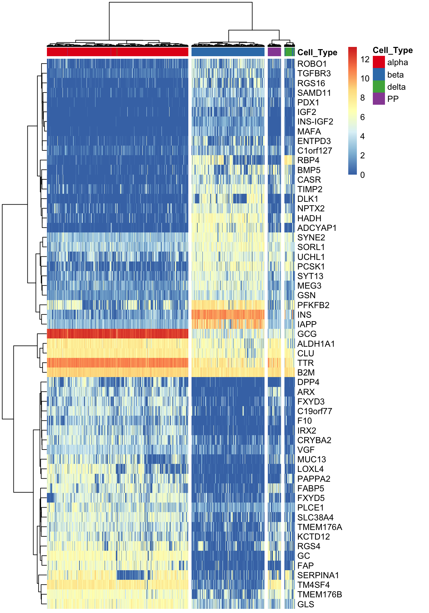
Find marker genes for SV3.
marker.counts.SV3 <- find_markers(summ_exp, as.matrix(iasva.sv[,c(3)]), rsq.cutoff = 0.3)# of markers (): 54total # of unique markers: 54nrow(marker.counts.SV3)[1] 54marker.counts.SV3.long <- find_markers(summ_exp, as.matrix(iasva.sv[,c(3)]), rsq.cutoff = 0.2)# of markers (): 138total # of unique markers: 138nrow(marker.counts.SV3.long)[1] 138anno.col <- data.frame(Cell_Type=Cell_Type, SV3=iasva.sv[,3])
rownames(anno.col) <- colnames(marker.counts.SV3)
head(anno.col) Cell_Type SV3
SRR3541303 beta 0.0070956379
SRR3541304 beta -0.0006460813
SRR3541305 beta -0.0116911796
SRR3541306 beta -0.0044453589
SRR3541307 beta 0.0008762206
SRR3541308 beta -0.0080419417cell.type.col <- color.vec[1:4]
names(cell.type.col) <- c("alpha","beta","delta","PP")
anno.colors <- list(Cell_Type=cell.type.col)
pheatmap(log(marker.counts.SV3+1), show_colnames =FALSE, show_rownames = TRUE, clustering_method = "ward.D2",cutree_cols = 2,annotation_col = anno.col, annotation_colors=anno.colors)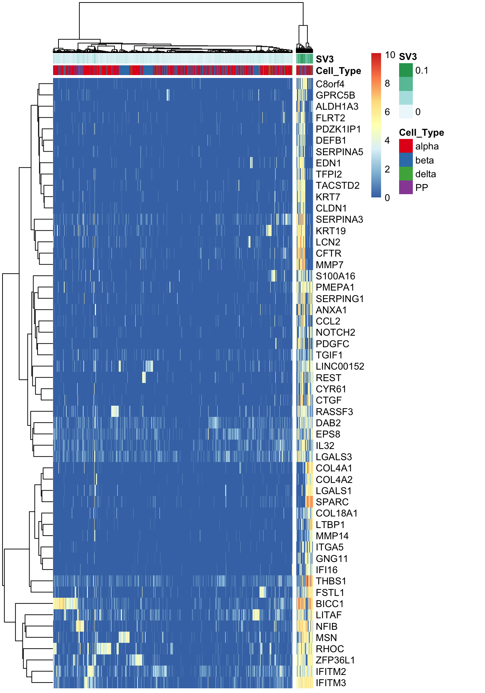
Run tSNE post IA-SVA, i.e., run tSNE on marker genes obtained from IA-SVA.
set.seed(75458456)
tsne.res.iasva <- Rtsne(unique(t(log(marker.counts+1))), dims = 2)
plot(tsne.res.iasva$Y[,1:2], main="IA-SVA", xlab="tSNE Dim1",
ylab="tSNE Dim2", pch=21, col=color.vec[Cell_Type],
bg=color.vec[Cell_Type], oma=c(4,4,6,12))
legend("topright", levels(Cell_Type), border="white", fill=color.vec, bty="n")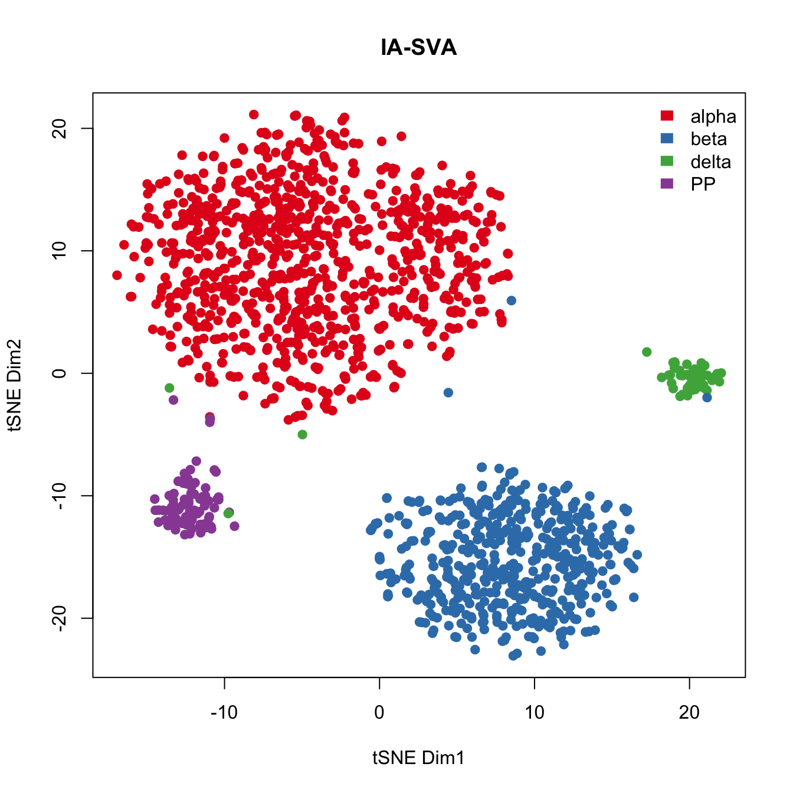 tSNE performed on marker genes selected via IA-SVA performs better than original tSNE analyses using all genes. This example again reiterates the importance of gene selection using IA-SVA for effective clustering of single-cell datasets.
pdf(file="output/Xin_Islets_All_demensionality_reduction_Figure4DEFG.pdf", width=8, height=9)
par(mfrow=c(2,2))
plot(tsne.res.all$Y, main="tSNE", xlab="Dimension 1", ylab="Dimension 2",pch=21, col=color.vec[Cell_Type], bg=color.vec[Cell_Type])
legend("topleft", levels(Cell_Type), border="white", fill=color.vec, bty="n")
plot(tsne.res.iasva$Y, main="IA-SVA + tSNE", xlab="Dimension 1", ylab="Dimension 2", pch=21, col=color.vec[Cell_Type], bg=color.vec[Cell_Type])
plot(rtsne_out$Y[,c(1,2)], main="CellView", xlab="Dimension 1", ylab="Dimension 2",pch=21, col=color.vec[Cell_Type], bg=color.vec[Cell_Type])
plot(seurat.obj@dr$tsne@cell.embeddings[,c(1,2)], main="Spectral tSNE (Seurat)", xlab="Dim1", ylab="Dim2",pch=21, col=color.vec[Cell_Type], bg=color.vec[Cell_Type])
dev.off()quartz_off_screen
2 pdf(file="output/Xin_Islets_AllCells_tSNEByKnownFactors_FigureS9.pdf", width=10, height=11)
par(mfrow=c(2,2))
plot(tsne.res.all$Y, main="Gender", xlab="Dimension 1", ylab="Dimension 2", pch=21, col=color.vec[Gender], bg=color.vec[Gender], oma=c(4,4,6,12))
legend("topleft", levels(Gender), border="white", fill=color.vec, bty="n")
plot(tsne.res.all$Y, main="Patient ID", xlab="Dimension 1", ylab="Dimension 2", pch=21, col=tol21rainbow[Patient_ID], bg=tol21rainbow[Patient_ID], oma=c(4,4,6,12))
legend("topleft", levels(Patient_ID), border="white", fill=tol21rainbow, bty="n", cex=0.5)
plot(tsne.res.all$Y, main="Ethnicity", xlab="Dimension 1", ylab="Dimension 2", pch=21, col=color.vec[Ethnicity], bg=color.vec[Ethnicity], oma=c(4,4,6,12))
legend("topleft", levels(Ethnicity), border="white", fill=color.vec, bty="n")
plot(tsne.res.all$Y, main="Phenotype", xlab="Dimension 1", ylab="Dimension 2", pch=21, col=color.vec[Phenotype], bg=color.vec[Phenotype], oma=c(4,4,6,12))
legend("topleft", levels(Phenotype), border="white", fill=color.vec, bty="n")
par(mfrow=c(1,1))
dev.off()quartz_off_screen
2 pdf(file="output/Xin_Islets_AllCells_IASVA_nocolor.pdf", width=4, height=4)
pairs(iasva.sv[,1:4], pch=21, col="black", bg="black", cex=0.3)
dev.off()quartz_off_screen
2 pdf(file="output/Xin_Islets_AllCells_IASVA.pdf", width=4, height=4)
pairs(iasva.sv[,1:4], pch=21, col=color.vec[Cell_Type], bg=color.vec[Cell_Type], cex=0.3)
dev.off()quartz_off_screen
2 pdf(file="output/Xin_Islets_AllCells_PCA.pdf", width=4, height=4)
pairs(pca.res[,1:4], pch=21, col=color.vec[Cell_Type], bg=color.vec[Cell_Type], cex=0.3)#
dev.off()quartz_off_screen
2 colnames(sva.res) <- paste0("SV",1:4)
pdf(file="output/Xin_Islets_AllCells_USVA.pdf", width=4, height=4)
pairs(sva.res[,1:4], pch=21, col=color.vec[Cell_Type], bg=color.vec[Cell_Type], cex=0.3) #4,4,6,12
dev.off()quartz_off_screen
2 anno.col <- data.frame(Cell_Type=Cell_Type)
rownames(anno.col) <- colnames(marker.counts)
head(anno.col) Cell_Type
SRR3541303 beta
SRR3541304 beta
SRR3541305 beta
SRR3541306 beta
SRR3541307 beta
SRR3541308 betacell.type.col <- color.vec[1:4]
names(cell.type.col) <- c("alpha","beta","delta","PP")
anno.colors <- list(Cell_Type=cell.type.col)
pheatmap(log(marker.counts+1), show_colnames =FALSE, show_rownames = TRUE,
clustering_method = "ward.D2",cutree_cols = 4,annotation_col = anno.col, annotation_colors=anno.colors,
filename="output/FigureS11_Xin_Islets_AllCells_IASVA_Markers_pheatmap.pdf", width=10, height=10)write.table(as.data.frame(rownames(marker.counts)), file="output/Xin_Islets_AllCells_SV1_Genes_rsqcutoff0.3.txt", quote=F,
row.names=F, col.names=F, sep=" ")
write.table(as.data.frame(rownames(marker.counts.long)), file="output/Xin_Islets_AllCells_SV1_Genes_rsqcutoff0.2.txt", quote=F,
row.names=F, col.names=F, sep=" ")write.table(as.data.frame(rownames(marker.counts.SV3)), file="output/Xin_Islets_AllCells_SV3_Genes_rsqcutoff0.3.txt", quote=F,
row.names=F, col.names=F, sep=" ")
write.table(as.data.frame(rownames(marker.counts.SV3.long)), file="output/Xin_Islets_AllCells_SV3_Genes_rsqcutoff0.2.txt", quote=F,
row.names=F, col.names=F, sep=" ")Session information
sessionInfo()R version 3.5.0 (2018-04-23)
Platform: x86_64-apple-darwin15.6.0 (64-bit)
Running under: macOS Sierra 10.12.6
Matrix products: default
BLAS: /Library/Frameworks/R.framework/Versions/3.5/Resources/lib/libRblas.0.dylib
LAPACK: /Library/Frameworks/R.framework/Versions/3.5/Resources/lib/libRlapack.dylib
locale:
[1] en_US.UTF-8/en_US.UTF-8/en_US.UTF-8/C/en_US.UTF-8/en_US.UTF-8
attached base packages:
[1] parallel stats4 stats graphics grDevices utils datasets
[8] methods base
other attached packages:
[1] SummarizedExperiment_1.10.1 DelayedArray_0.6.1
[3] matrixStats_0.53.1 Biobase_2.40.0
[5] GenomicRanges_1.32.3 GenomeInfoDb_1.16.0
[7] IRanges_2.14.10 S4Vectors_0.18.3
[9] BiocGenerics_0.26.0 cluster_2.0.7-1
[11] RColorBrewer_1.1-2 DescTools_0.99.24
[13] corrplot_0.84 pheatmap_1.0.10
[15] Rtsne_0.13 irlba_2.3.2
[17] dbscan_1.1-2 iasvaExamples_1.0.0
[19] iasva_0.99.3 Seurat_2.3.2
[21] Matrix_1.2-14 cowplot_0.9.2
[23] ggplot2_2.2.1.9000 sva_3.28.0
[25] BiocParallel_1.14.2 genefilter_1.62.0
[27] mgcv_1.8-23 nlme_3.1-137
loaded via a namespace (and not attached):
[1] reticulate_1.8 R.utils_2.6.0 tidyselect_0.2.4
[4] RSQLite_2.1.1 AnnotationDbi_1.42.1 htmlwidgets_1.2
[7] grid_3.5.0 trimcluster_0.1-2 ranger_0.10.1
[10] munsell_0.4.3 codetools_0.2-15 ica_1.0-2
[13] withr_2.1.2 colorspace_1.3-2 knitr_1.20
[16] rstudioapi_0.7 geometry_0.3-6 ROCR_1.0-7
[19] robustbase_0.93-0 dtw_1.20-1 dimRed_0.1.0
[22] labeling_0.3 lars_1.2 git2r_0.21.0
[25] GenomeInfoDbData_1.1.0 mnormt_1.5-5 bit64_0.9-7
[28] rprojroot_1.3-2 ipred_0.9-6 diptest_0.75-7
[31] R6_2.2.2 VGAM_1.0-5 hdf5r_1.0.0
[34] flexmix_2.3-14 DRR_0.0.3 bitops_1.0-6
[37] assertthat_0.2.0 SDMTools_1.1-221 scales_0.5.0
[40] nnet_7.3-12 gtable_0.2.0 ddalpha_1.3.3
[43] workflowr_1.0.1 timeDate_3043.102 rlang_0.2.1
[46] CVST_0.2-2 scatterplot3d_0.3-41 RcppRoll_0.3.0
[49] splines_3.5.0 lazyeval_0.2.1 ModelMetrics_1.1.0
[52] acepack_1.4.1 broom_0.4.4 checkmate_1.8.5
[55] yaml_2.1.19 reshape2_1.4.3 abind_1.4-5
[58] backports_1.1.2 Hmisc_4.1-1 caret_6.0-80
[61] tools_3.5.0 lava_1.6.1 psych_1.8.4
[64] gplots_3.0.1 proxy_0.4-22 ggridges_0.5.0
[67] Rcpp_0.12.17 plyr_1.8.4 base64enc_0.1-3
[70] zlibbioc_1.26.0 purrr_0.2.5 RCurl_1.95-4.10
[73] rpart_4.1-13 pbapply_1.3-4 zoo_1.8-2
[76] sfsmisc_1.1-2 magrittr_1.5 data.table_1.11.4
[79] manipulate_1.0.1 lmtest_0.9-36 RANN_2.5.1
[82] mvtnorm_1.0-8 whisker_0.3-2 fitdistrplus_1.0-9
[85] evaluate_0.10.1 xtable_1.8-2 XML_3.98-1.11
[88] mclust_5.4 gridExtra_2.3 compiler_3.5.0
[91] tibble_1.4.2 KernSmooth_2.23-15 R.oo_1.22.0
[94] htmltools_0.3.6 segmented_0.5-3.0 Formula_1.2-3
[97] snow_0.4-2 tidyr_0.8.1 expm_0.999-2
[100] tclust_1.4-1 lubridate_1.7.4 DBI_1.0.0
[103] diffusionMap_1.1-0 magic_1.5-8 MASS_7.3-50
[106] fpc_2.1-11 boot_1.3-20 R.methodsS3_1.7.1
[109] gdata_2.18.0 metap_0.9 bindr_0.1.1
[112] gower_0.1.2 igraph_1.2.1 pkgconfig_2.0.1
[115] foreign_0.8-70 recipes_0.1.3 foreach_1.4.4
[118] annotate_1.58.0 XVector_0.20.0 prodlim_2018.04.18
[121] stringr_1.3.1 digest_0.6.15 pls_2.6-0
[124] tsne_0.1-3 rmarkdown_1.9 htmlTable_1.12
[127] kernlab_0.9-26 gtools_3.5.0 modeltools_0.2-21
[130] jsonlite_1.5 bindrcpp_0.2.2 limma_3.36.2
[133] pillar_1.2.3 lattice_0.20-35 DEoptimR_1.0-8
[136] survival_2.42-3 glue_1.2.0 FNN_1.1
[139] png_0.1-7 prabclus_2.2-6 iterators_1.0.9
[142] bit_1.1-14 class_7.3-14 stringi_1.2.2
[145] mixtools_1.1.0 blob_1.1.1 doSNOW_1.0.16
[148] latticeExtra_0.6-28 caTools_1.17.1 memoise_1.1.0
[151] dplyr_0.7.5 ape_5.1 This reproducible R Markdown analysis was created with workflowr 1.0.1